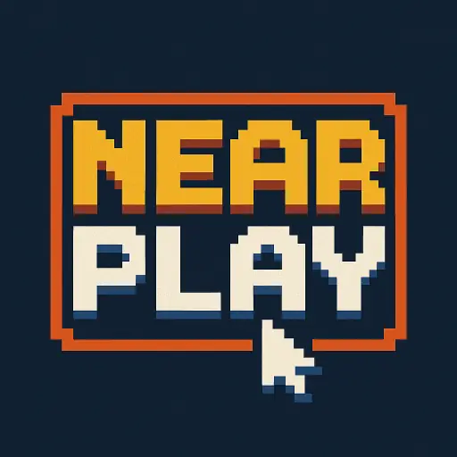

Local Multiplayer
Near Play
Offline Local Multiplayer Games
Near Play is an offline two-player game collection for short local sessions using MultipeerConnectivity over nearby WiFi and Bluetooth, with no internet or account required.

Local Multiplayer
Near Play is an offline two-player game collection for short local sessions using MultipeerConnectivity over nearby WiFi and Bluetooth, with no internet or account required.